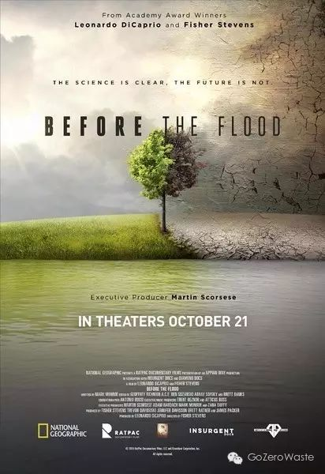
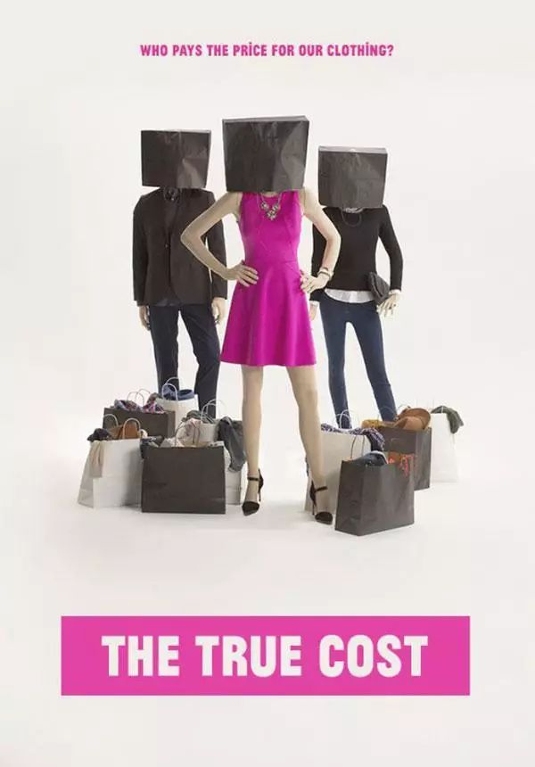
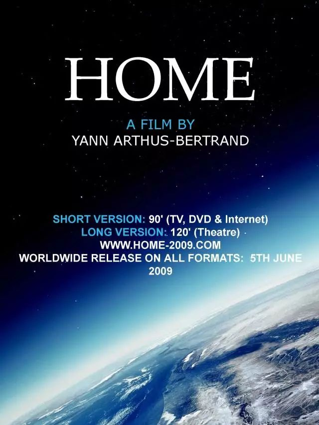
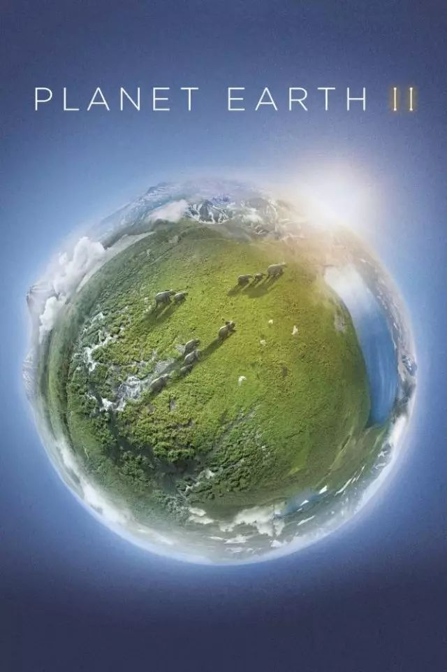
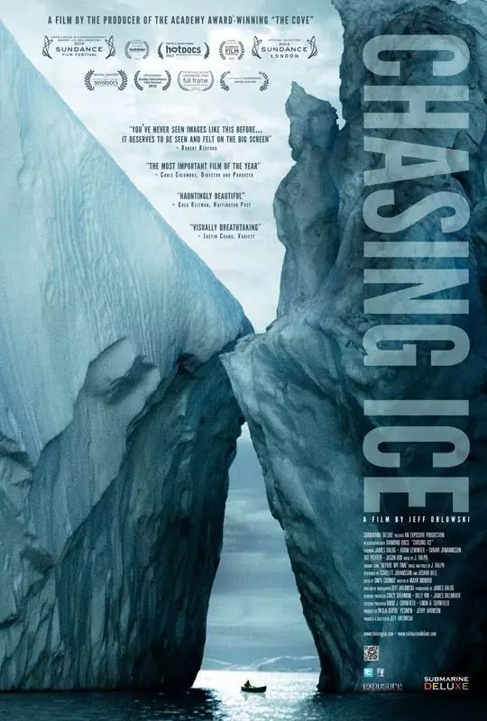
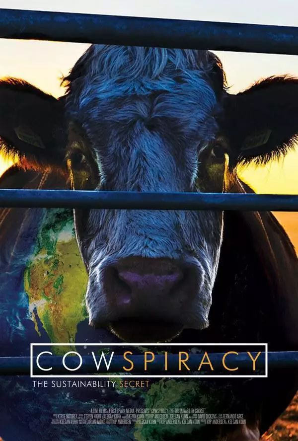
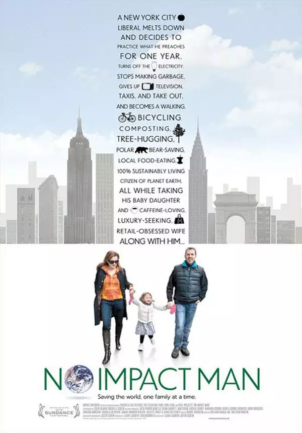
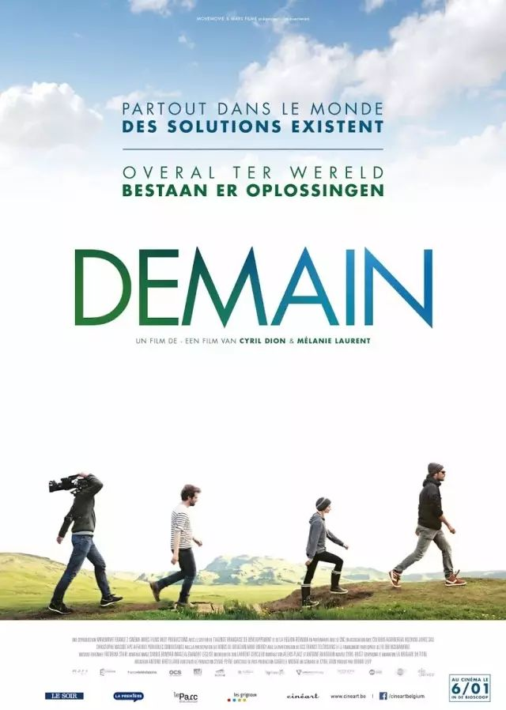

Day4 - 看一部环保主题纪录片¶
周五快乐！宅在家的周末，不如一起看电影吧！
今天，给大家推荐8部与环保主题相关的纪录片。纪录片的目的在于记录事实，这里既有直指人心的严峻数字，也有无与伦比的绝美风光。而作为看客（真是只是看客吗？），透过导演的镜头，你能感受到什么？又会作出怎样的改变？
Before the Flood¶
《洪水泛滥之前》
{kind=link}
导演: Fisher Stevens | 2016 | 豆瓣评分: 8.7
你是否觉得气候变化离你还很遥远？然而，这并非我们的子孙后代才会面临的灾难性问题，而是此刻正在我们身边发生着，正在影响着我们的生活质量，甚至摧毁我们的生存环境。奥斯卡影帝、联合国和平大使 Leonardo DiCaprio 携手国家地理频道以及奥斯卡最佳纪录片《海豚湾》导演 Fisher Stevens，遍访五大洲和北极圈，亲眼目睹气候变化的实际情况，与多位政治领袖、科学家、环保人士探讨对人类的影响。
全片观看地址：https://www.youtube.com/watch?v=ZFmVRsQho4Y&t=1254s
The True Cost¶
《真实的成本》
{kind=link}
导演: Andrew Morgan | 2015 | 豆瓣评分: 8.4
这些年来，服装的价格似乎越来越便宜，19块9的T恤满大街都是。小小的一块价格标签背后，服装行业真正的成本是什么？影片讲述了一个有关服装的故事：关于我们每天穿的衣服、关于为我们做衣服的人、关于服装行业对世界的影响。从美国到印度，从日本到孟加拉，从光鲜亮丽的时尚秀场到不见天日的血汗工厂，这部影片将带你见证衣服背后不为人知的人与故事。
全片观看地址：https://v.qq.com/x/page/q019269xbpq.html
HOME¶
《家园》
{kind=link}
导演: Yann Arthus-Bertrand | 2009 | 豆瓣评分: 9.2
导演经过15年的筹备，历访50多个国家才得以完成此片。经过四十亿年的漫长演变，地球变成一个物种繁多、资源丰富、奇特美丽的蓝色星球。然而自人类出现以来，我们只用了二十万年的时间，便将地球的宝贵资源消耗殆尽。珍稀物种灭绝，原始资源奇缺，污染日益严重，人类以及地球的明天将何去何从？
全片观看地址：https://v.qq.com/x/cover/xvgy9ay5loiijot/v0014h8dqtu.html
Planet Earth II¶
《地球脉动》第二季
{kind=link}
导演: David Attenborough | 2016 | 豆瓣评分: 9.9
从2006年的第一季（豆瓣评分9.7）到2016年的第二季，《地球脉动》可以称得上难以超越的经典。从南极到北极，从赤道到寒带，从非洲草原到热带雨林，再从荒凉峰顶到深邃大海，难以数计的生物以极其绝美的身姿呈现在世人面前。跟随导演的镜头，探索地球家园的壮美与奇特。
全片观看地址：http://v.qq.com/detail/0/0qcd5h3k537846y.html
Chasing Ice¶
《逐冰之旅》
{kind=link}
导演: Jeff Orlowski | 2012 | 豆瓣评分: 8.7
去年我去冰岛参加冰川徒步，导游指着黑色的沙地心痛地告诉我，以前这里全是冰川。站在冰川上，那种对自然的敬畏无法言说，然而气候变暖却让全球的冰川正在以惊人的速度消失。这部影片纪录了国家地理杂志摄影师詹姆斯·巴洛格长达数年的南极冰川考察之旅。通过他的摄像机镜头纪录，让我们意识到我们的星球已经面目全非、越发虚弱，为我们带来了震撼视觉和人心的影像和拷问。
Cowspiracy¶
《奶牛阴谋》
{kind=link}
导演: Kip Andersen | 2014 | 豆瓣评分: 8.3
谁是环境污染的头号源头？造成热带雨林破坏、物种灭绝、海洋死区、水污染，温室气体排放量占全球51%，这一系列问题背后并非化石燃料，而是畜牧业。美国导演吉普·安德森希望通过这部纪录片探索畜牧业对生态环境的影响和与荒漠化、污染及其他环境问题的关联。
全片观看地址：https://v.qq.com/x/page/d0162c9eayi.html
No Impact Man¶
《零冲击生活》
{kind=link}
导演: Laura Gabbert | 2009 | 豆瓣评分: 7.7
不用厕纸！不用白炽灯！不用一次性剃须刀！不看报纸电视杂志！不坐电梯汽车地铁火车飞机！不购置新东西！不买进口商品！不用塑料袋！不用洗衣液！不开空调！不订外卖！不制造垃圾……影片讲述了一个纽约作家同时也是Zero Waste大神Colin Beavan发起一项拯救星球的极端试验，全家人试图在曼哈顿中心以一种对环境零污染的方式生活一年。
全片观看地址：http://www.56.com/u23/v_MTEwODkxMjc2.html?ptag=vsogou
Demain¶
《明天》
{kind=link}
导演: Cyril Dion | 2015 | 豆瓣评分: 8.3
两位导演在当了父母之后对环境问题感到深深不安，于是遍访10个国家，合力制作了这部纪录片。虽然是环保主题，但表现形式十分清新愉快，影片的重点在于分享已经在各地操作并看到成效的解决方案。我们需要做的，就是尽快行动起来。明天也可以很美好。
全片观看地址：https://www.bilibili.com/video/av13178102

注解
本文来自公众号「GoZeroWaste」